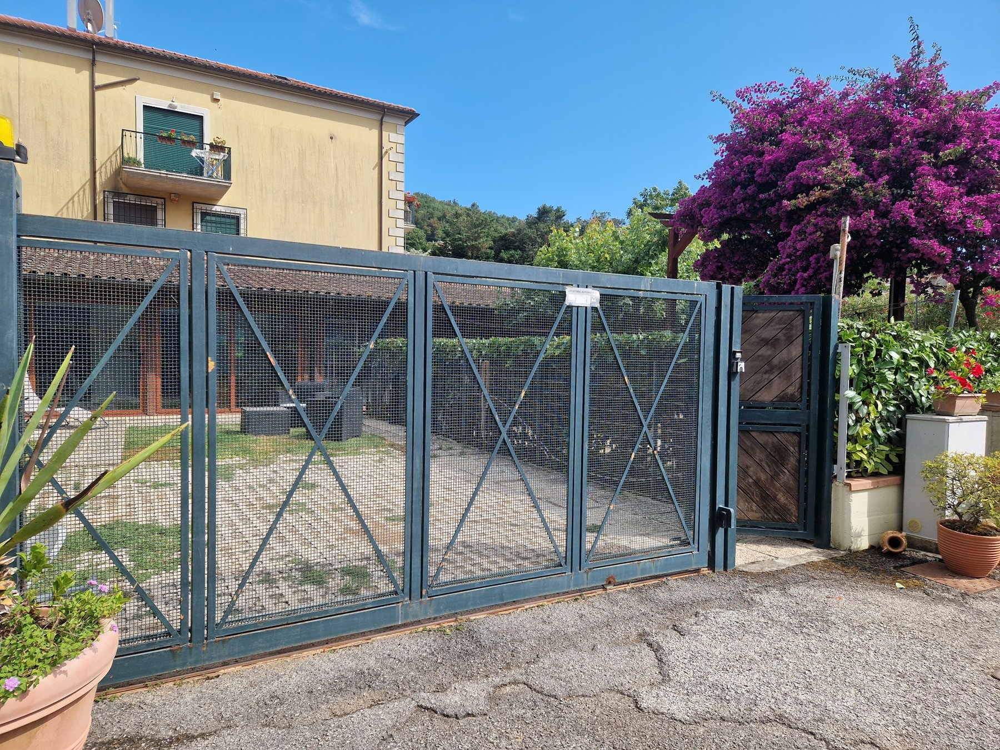

Dove parcheggiare
Qui trovate le indicazioni per parcheggiare presso la struttura e alcune soluzioni consigliate per visitare Salerno.
Parcheggio nella struttura
È possibile parcheggiare nel giardino della casa oppure fuori sulla strada, prima della curva per entrare.

Parcheggio Libertà
Parcheggio moderno, ampio e ben organizzato in Piazza della Libertà, nel cuore di Salerno. È comodo per raggiungere a piedi il lungomare, il centro storico e la Villa Comunale.
Parcheggio Via Alfonso Carella
Un'altra opzione comoda è il parcheggio in Via Alfonso Carella: è più defilato rispetto al centro, ma può essere utile nei periodi di maggiore affluenza.
Parcheggio Piazza Concordia / Mazzini
Soluzione utile se volete stare vicino al lungomare, alla stazione o al centro. Può essere molto comoda per una passeggiata in città.